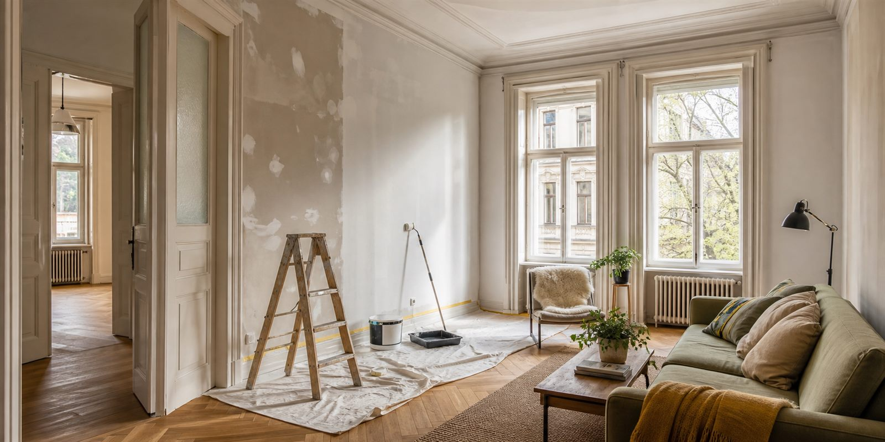

Megbízható ingatlankarbantartás Sopronban és környékén
Gyors, fotókkal dokumentált karbantartás, javítás és ingatlangondozás lakástulajdonosoknak, bérbeadóknak, Airbnb-házigazdáknak és az osztrák határ közelében élő külföldi tulajdonosoknak.
- Fotós frissítésekA kiinduló állapot és a kész eredmény követhető marad.
- Német kommunikációKülföldi tulajdonosoknak is érthető, rendezett egyeztetés.
- Gyors WhatsApp válaszKüldjön fotókat, címet és időzítést; innen tisztázzuk a következő lépést.
- Egy kapcsolattartóKevesebb szervezés, átláthatóbb döntések és rendezettebb átadás.
Küldjön néhány fotót, és megmondjuk, mi lehet a legjobb megoldás.

A feladatot indulás előtt pontosítjuk, az egyeztetett munkát dokumentálható lépésekben végezzük, az ingatlant pedig rendezett, használható állapotban adjuk át.
A feladatlista, a hozzáférés, a határidő és az átadás magyarul vagy németül is tisztázható.
Kérés szerint a kiinduló állapot, a fontos munkafázis és az átadás is fotókkal követhető.
Belvárosi lakások, kiadó ingatlanok, társasházi udvarok, irodák és képviseleti terek gyakorlati karbantartása.
A különbség az első pillanatban látszik
A legtöbb érdeklődő néhány másodperc alatt dönt arról, hogy egy ingatlan gondozottnak tűnik-e. A célunk a tiszta, rendezett, bemutatható állapot, nem a túlzó látvány.
Milyen feladatokat érdemes ránk bízni?
Olyan célzott javításokra és karbantartási feladatokra fókuszálunk, ahol a tiszta egyeztetés, a rendezett kivitelezés és az átadás előtti állapot számít. Ez különösen hasznos tulajdonosoknak, kezelőknek és vendégfogadásra készülő ingatlanoknál.
Tipikus helyzetek, gyakorlati segítség
Nem minden ingatlannak ugyanarra van szüksége. Nyissa meg azt a helyzetet, amelyik legközelebb áll az Önéhez.

Tipikus helyzet
Külföldön élő tulajdonos
Részletek +
A feladat fotókkal és rövid leírással is elindítható, így a tulajdonos akkor is átlátja a helyzetet, ha nincs Sopronban.
 Tipikus helyzet
Airbnb-vendégváltás
Részletek +
Tipikus helyzet
Airbnb-vendégváltás
Részletek +
A látható hibákat, falnyomokat és kisebb javításokat a következő érkezéshez igazítva lehet priorizálni.
 Tipikus helyzet
Bérlő kiköltözése után
Részletek +
Tipikus helyzet
Bérlő kiköltözése után
Részletek +
Falhibák, kisebb sérülések, szerelési pontok és átadás előtti frissítés egy közös, követhető feladatlistába rendezhető.
 Tipikus helyzet
Ingatlankezelői feladatlista
Részletek +
Tipikus helyzet
Ingatlankezelői feladatlista
Részletek +
Több apró karbantartási pont egy egyeztetésben kezelhető, így kevesebb külön kör és kevesebb félreértés marad.
 Tipikus helyzet
Elhanyagolt udvar vagy kert
Részletek +
Tipikus helyzet
Elhanyagolt udvar vagy kert
Részletek +
Fűnyírással, metszéssel és a járófelületek rendezésével a külső tér ismét gondozott, bemutatható képet mutathat.
 Tipikus helyzet
Iroda vagy képviseleti tér látogatás előtt
Részletek +
Tipikus helyzet
Iroda vagy képviseleti tér látogatás előtt
Részletek +
Kisebb faljavítások, festés és szerelések úgy ütemezhetők, hogy a napi működést és a belépési szabályokat is figyelembe vegyük.
Illusztratív munkapéldák
A példák tipikus kiinduló állapotokat, munkafázisokat és várható eredményeket mutatnak. Nem saját referenciaprojektek; egy konkrét ingatlan feladatát mindig külön egyeztetjük.
A lényeges állapotok láthatók maradnak.
A feladatot az ingatlan tényleges állapota alapján rögzítjük, a munkafázisokról pedig kérés szerint fotós visszajelzés készül.
Az illusztráció megmutatja az adott munkatípus jellemző kiinduló állapotát.
A képek a jellemző előkészítési és javítási lépéseket szemléltetik.
A várható eredmény egyszerűen látható: tisztább felület és rendezettebb tér.
Képes munkafolyamatok
Nézze meg a szolgáltatástípusonként rendezett képsorozatokat. A részletes galéria és az előtte-utána összehasonlítás egyetlen nézetben nyílik meg.
Kiknek hasznos?
A szolgáltatás azoknak készült, akik Sopronban és környékén megbízható egyeztetést, fotós visszajelzést és rendezett munkavégzést várnak el: tulajdonosoknak, kezelőknek, Airbnb-házigazdáknak, irodáknak és kisvállalkozásoknak.
01 Határon átnyúló tulajdonosok és osztrák kapcsolatú vállalkozások Részletek +
Sopron az osztrák határtól néhány percre fekszik, ezért sok tulajdonos és kisebb iroda két ország között osztja meg az idejét. A feladatok a látogatásokhoz, a távoli döntéshozatalhoz és a belépési szabályokhoz igazíthatók.
02 Helyi cégek és kisirodák Részletek +
Kisebb javítások, falfrissítés és szerelési feladatok a napi működéshez igazítva. A cél a rendezett környezet helyreállítása indokolatlan fennakadás nélkül.
03 Külföldi tulajdonosok Részletek +
Az egyeztetés magyarul vagy németül történhet, a fontos állapotokról pedig fotós visszajelzés kérhető. Ez különösen hasznos az Ausztriában vagy távolabb élő tulajdonosoknak, akik nem tartózkodnak helyben Sopronban.
04 Airbnb és hosszú távú bérlemények Részletek +
Vendég- vagy bérlőváltás előtt a látható hibák, faljavítások és kisebb karbantartási feladatok egy folyamatban kezelhetők. A határidőt mindig a tényleges munka alapján egyeztetjük.
05 Ingatlankezelők és helyi kapcsolattartók Részletek +
Ha több kisebb feladat gyűlik össze egy lakásban, irodában vagy közös területen, a munkát átlátható listába rendezzük. Ez segít abban, hogy a tulajdonos, kezelő és helyszíni kapcsolattartó ugyanazt lássa.
06 Magánházak és lakástulajdonosok Részletek +
Családi házak és saját használatú lakások kisebb javításai, festése, gipszkarton-javítása, kert- és szezonális karbantartása is egy átlátható feladatlistába rendezhető. Költözés vagy értékesítés előtt segítünk az otthont rendezett, használható és bemutatható állapotba hozni.
Hogyan lesz az üzenetből elvégezhető feladat?
A cél az, hogy a munka már az első üzenettől átlátható legyen: mit kell javítani, hogyan lehet bejutni, mikor szükséges döntés, és milyen visszajelzés várható.
Fotók, cím és időzítés
Küldje el a problémát, néhány fotót, a soproni helyszínt és azt, mikorra fontos az átadás vagy vendégérkezés.
Feladatlista és hozzáférés
Tisztázzuk, mi tartozik a munkába, hogyan lehet bejutni, ki dönthet a változásokról, és kell-e helyszíni felmérés.
Egyeztetett munkavégzés
A kivitelezés a jóváhagyott feladatokra koncentrál. Ha közben új kérdés merül fel, azt nem feltételezéssel, hanem külön egyeztetéssel kezeljük.
Fotós állapotfrissítés
Kérés szerint láthatóvá tesszük a kiinduló állapotot, a fontos munkafázist és az elkészült eredményt.
Rendezett átadás
Az elkészült feladatokat röviden összefoglaljuk, az ingatlant pedig használható, tiszta és bemutatható állapotban hagyjuk.
Gyakori kérdések
Gyakorlati válaszok a felmérésről, árazásról, határidőkről és távoli egyeztetésről.
Lehet csak kisebb munkát kérni?
Igen. A szolgáltatás kifejezetten alkalmas kisebb, de fontos javításokra is, például falhibákra, szerelési feladatokra vagy átadás előtti frissítésre. A vállalhatóságot mindig a helyszín, a feladatlista és az időzítés alapján erősítjük meg.
Küldhetek fotókat első körben?
Igen, ez a legegyszerűbb kiindulópont. Néhány jól megvilágított összkép és közelkép sokszor elég ahhoz, hogy meghatározzuk a következő lépést. Ha a pontos műszaki tartalom fotókból nem állapítható meg, helyszíni felmérést javaslunk.
Németül is lehet egyeztetni?
Igen. A feladat egyeztetése, a munkafázisok visszajelzése és az átadás magyarul vagy németül is történhet. Ez nem külön szolgáltatás, hanem a működés része.
Hogyan alakul az ár?
Az ár a tényleges feladatból, az anyagigényből, a hozzáférésből és az időzítésből áll össze. Fotók alapján gyakran adható első tájékoztatás, de összetettebb vagy rejtett hibáknál helyszíni felmérés szükséges lehet. A jóváhagyott munkán túli változásokat külön egyeztetjük.
Tudnak segíteni sürgős Airbnb-helyzetben?
A rövid határidejű feladatokat kapacitás és a munka terjedelme alapján vizsgáljuk meg. A fotók, a pontos cím és a következő vendég érkezési ideje segít gyorsan eldönteni, mi vállalható reálisan. Nem ígérünk olyan határidőt, amely mellett a munka minősége nem tartható.
Mi történik, ha nem vagyok Sopronban?
A feladat távolról is egyeztethető, ha a bejutás és a döntési jogosultság rendezett. A fontos kérdéseket indulás előtt tisztázzuk, a munkáról pedig kérés szerint fotós frissítést küldünk. Kulcsátadást vagy helyszíni kapcsolattartót minden esetben előre egyeztetünk.
Sopronban kívül is vállalnak munkát?
Az elsődleges működési terület Sopron. A közeli települések és a soproni borvidék feladatait a távolság, a munka mérete és az időzítés alapján lehet megvizsgálni. Érdemes elküldeni a pontos helyszínt már az első üzenetben.
A weboldal képei saját referenciák?
Nem. Az oldalon szereplő képek illusztratív példák, amelyek tipikus kiinduló állapotokat, munkafázisokat és várható eredményeket mutatnak. Egy konkrét ingatlan feladatát mindig a helyszín és a tényleges állapot alapján egyeztetjük.
Küldjön fotót, és tisztázzuk a következő lépést
A leggyorsabb kezdéshez küldjön 2-3 fotót, az ingatlan soproni címét vagy környékét, a hozzáférés módját és a kívánt időzítést. Röviden visszajelzünk, milyen információ hiányzik még, és mi lehet a reális következő lépés.